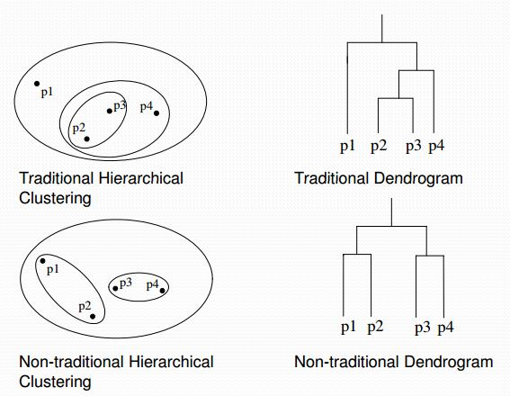

K- Mean
K-means Clustering¶
K-Means Clustering adalah suatu metode penganalisaan data atau metode Data Mining yang melakukan proses pemodelan tanpa supervisi (unsupervised) dan merupakan salah satu metode yang melakukan pengelompokan data dengan sistem partisi.

Metode K-Means Clustering berusaha mengelompokkan data yang ada ke dalam beberapa kelompok, dimana data dalam satu kelompok mempunyai karakteristik yang sama satu sama lainnya dan mempunyai karakteristik yang berbeda dengan data yang ada di dalam kelompok yang lain.

Dengan kata lain, metode K-Means Clustering bertujuan untuk meminimalisasikan objective function yang diset dalam proses clustering dengan cara meminimalkan variasi antar data yang ada di dalam suatu cluster dan memaksimalkan variasi dengan data yang ada di cluster lainnya.
Data clustering menggunakan metode K-Means Clustering ini secara umum dilakukan dengan algoritma dasar sebagai berikut:
Algoritma K-means Clustering¶
-
Langkah 1 – Menentukan secara acak K titik data sebagai pusat cluster yang disebut centroid.
-
Langkah 2 – Menandai masing masing x_i masuk ke ke cluster tertentu, dengan cara menghitung jarak x_i ke masing masing pusat cluster (centroid) dan memasukkan x_i anggota pusat cluster tertentu tersebut jika memiliki jarak terdekat.
-
Langkah 3 – Menentukan pusat cluster baru dengan menghitungya rata rata dari anggota cluster
-
Langkah 4 – Ulangai langkah 2 dan 3 sampai tidak tidak ada dari anggota setiap cluster berubah tempat kelompoknya
## Implementasi Studi Kasus
Saya akan mencoba metode K-means clustering ini menggunakan data berikut :
dari data diatas, saya mengambil 3 class sebagai centroid data yaitu pada baris ke 3, 8 dan 13. centroid bisa diambil secara random. kemudian cari tiap jarak data pada masing-masing baris dengan centroid yang sudah dipilih dengan rumus seperti berikut :

pada percobaan saya, berikut merupakan nilai jarak pada masing-masing baris dengan centroid dan sekaligus tentukan cluster nya , yaitu dengan cara ambil nilai terendah pada nilai jarak masing-masing class. saya kasih nama cluster 1, 2 dan 3
kemudian menentukan pusat cluster baru (centroid) dengan cara menghitung rata-rata dari masing-masing anggota cluster. dari rata-rata tersebut dapat diketahui nilai centroid baru.
dari rata-rata yang ditemukan diatas, dapat ditentukan nilai centroid barunya yaitu sebagai berikut:
setelah menemukan nilai centroid baru, maka Ulangai langkah 2 dan 3 sampai tidak tidak ada dari anggota setiap cluster berubah tempat kelompoknya.
menghitung jarak data dengan centroid baru. berikut hasil perhitungan pada iterasi kedua:
dari iterasi 2 diatas, didapatkan penempatan classnya sama pada iterasi 1, maka perhitungan sudah selesai
referensi